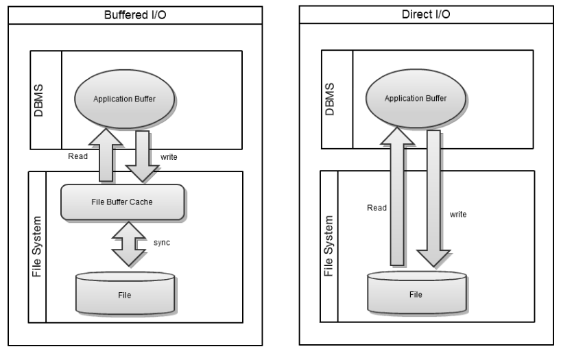

Database 의 성능은 Storage 의 Disk I/O 성능과 밀접한 관련이 있다. Storage 에서 Disk I/O 성능을 높일 수 있는 몇가지 방법에 대해서 설명한다.
OS의 File Cache 설정 변경
적절한 파일캐시(file cache) 설정으로 ALTIBASE가 사용하는 메모리 영역에 대한 스왑아웃(swap out) 발생요건을 억제, 스왑핑(swapping)으로 인한 운영체제 계층의 Disk I/O 지연시간이 ALTIBASE의 성능저하로 이어지는 현상을 최소화하기 위해 권고하는 사항이다.
파일캐시란 주기억장치와 보조기억장치간의 속도차이로 인한 병목을 해소하기 위해 운영체제차원에서 관리되는 일종의 시스템버퍼이다. 이러한 파일캐시는 운영체제 저마다의 고유한 정책(policy)에 의하여 관리되나 공통적으로 스왑정책과 직접적인 상관관계를 가진다. 스왑핑이란 자체는 주기억장치보다 더 큰 응용프로그램이나 데이터 파일을 다룰 수 있게 하는 유용함을 가지고 있으나, DBMS와 같이 장기상주 형의 응용프로그램이 운영되는 시스템에서는 스왑핑으로 인한 운영체제 계층의 Disk I/O 지연시간으로 인해 DBMS의 응답시간이 불규칙해지거나 최악의 경우에는 행(hang)과 같은 현상이 발생될 수 있기에 시스템 용도에 따라 고려가 요소가 된다.
따라서, ALTIBASE의 일관적인 응답시간 보장을 위해서는 스왑이 최대한 발생하지 않도록 관련 파일캐시 및 스왑 커널들을 사전에 설정하는 것이 바람직하다
적절한 파일 캐시 설정 값을 위한 가이드는 아래의 문서를 참조하길 추천한다
- ALTIBASE 운영을 위한 HPUX 설정 가이드
- ALTIBASE 운영을 위한 AIX 설정 가이드
- ALTIBASE 운영을 위한 Solaris 설정 가이드
- ALTIBASE 운영을 위한 Linux 설정 가이드
Direct I/O
OS의 파일시스템은 아래 그림의 Buffered I/O 형태 처럼 File Buffer Cache 라는 메모리 영역을 두고 파일 접근시 접근한 파일블럭을 캐쉬해둠으로써 느린 디스크에 대한 접근 성능을 향상시키는 구조를 갖고 있다.

그러나 DBMS와 같이 application level 에서 직접 데이타를 캐슁하는 경우는 디스크에서 file buffer cache 로 그리고 다시 DB의 자체 buffer cache 로 데이타가 이동해야 하는 오버헤드가 발생할 수 있다. 이러한 것을 "double copying" 이라고 하며 이런 경우 CPU와 메모리를 더 소모하는 결과가 나타날 수도 있다.
이러한 경우 우측의 그림처럼 OS의 file cache를 경유하지 않는 파일 입출력 방식인 Direct I/O를 사용하면 DBMS가 사용하는 CPU와 메모리 사용량을 낮출 수 있다.
ALTIBASE 가 Direct I/O 로 데이터 파일 및 로그파일 입출력을 하기 위해서는 다음의 ALTIBASE 프라퍼티가 설정되어 있어야 한다.
- DIRECT_IO_ENABLED = 1 # 0: Buffered I/O, 1:Direct I/O
- DATABASE_IO_TYPE = 1 # 0: Buffered I/O, 1:Direct I/O
- LOG_IO_TYPE = 1 # 0: Buffered I/O, 1:Direct I/O
일부 OS 또는 파일 시스템은 파일에 대한 Direct I/O 를 지원하지 않거나 또는 Application Level 에서의 Direct I/O 를 지원하지 않을 수 있으며 Direct I/O 를 사용하기 위해서 몇가지 작업을 필요로 하기도 한다.
이러한 경우에는 아래의 예와 같이 특정 옵션을 사용하여 파일 시스템을 Mount 하여야 한다.
OS | File System | Required Action |
|---|---|---|
Solaris | UFS | None |
VxFS | mount with convosync=direct | |
ZFS | Direct I/O 를 지원하지 않음. | |
HP | HFS | None |
JFS | None | |
VxFS | mount with convosync=direct | |
AIX | JFS | mount with use -o dio |
VxFS | mount with convosync=direct | |
Windows | NTFS | None |
FAT32 | None | |
Linux(2.4 > K ) | Ext2/Ext3/Ext4 | None |
Direct I/O 를 사용하는 것이 유리한 경우
데이터 베이스의 크기가 시스템 메모리의 크기보다 크고 Disk Buffer의 크기가 큰 경우에는 Direct I/O 를 사용하는 것이 유리할 수 있다. 예를 들어서 SAN 장비의 경우 자체적으로 큰 용량의 Buffer를 지원하는 경우가 있는데 이런 경우는 Direct I/O 가 유리할 수도 있다.
DB 의 크기가 크고 대량의 변경작업이 빈번하게 발생하는 DB에서는 checkpoint 과정 중에는 대량의 Disk I/O 가 발생하는 데 이때 OS File cache 와 DB의 buffer cache에 이중으로 copy 하는 비용으로 인해서 CPU 사용량과 메모리 사용량이 급증하는 현상이 보일 수 있다.
이런 경우 Direct I/O 를 사용하는 것이 문제 해결을 위한 방법이 될 수 있다.
Buffered I/O 를 사용하는 것이 유리한 경우
일반적으로 Local disk 사용할 경우는 Buffered I/O 방식을 사용하는 것이 Direct I/O를 사용하는 것에 비해서 성능상 유리하다.
OS의 Buffered I/O는 multi block 으로 read 하여 필요한 디스크 페이지를 prefetch 하여 입출력 속도를 향상 시킬 수 있어 일반적으로 Buffered I/O 로 사용할 때 성능이 향상되는 경향이 있다.
Page Size
ALTIBASE에서는 block size 대신 page size 란 용어를 사용한다. ALTIBASE의 page 크기는 메모리 테이블은 page당 32K , 디스크 테이블은 page당 8K의 고정적인 값을 가지고 있으며 변경할 수 없다.
일반적으로 다른 DB 벤더제품에서는 DB의 파일 입출력 효율을 위해서 OS의 block 사이즈를 고려하여 DB의 page size 크기를 DB 생성시에 조정하는 경우가 있으나 ALTIBASE는 page 크기가 고정적이며 변경할 수 없다. 또한 ALTIBASE는 DB의 page 크기에 맞추어서 OS의 block size 변경을 권장하지 도 않는다.
ALTIBASE page 크기와 OS block size 크기의 불일치로 인한 성능 저하 현상이 나타난 사례는 없다.
{kind=link}